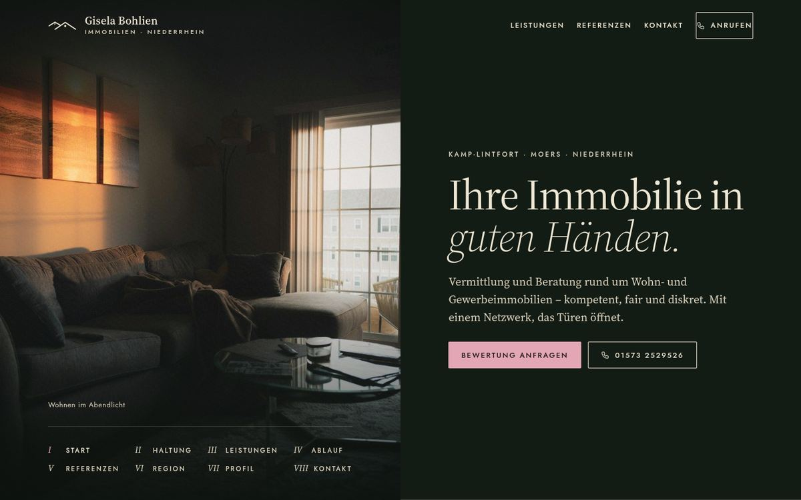
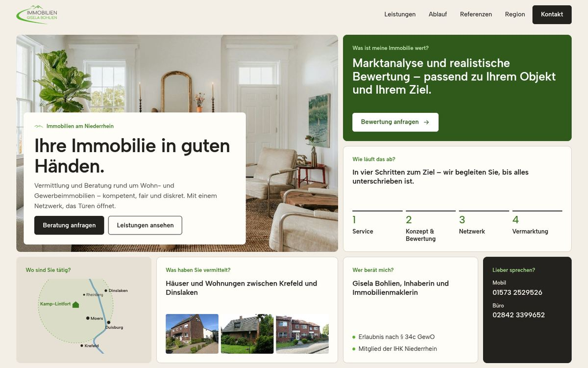
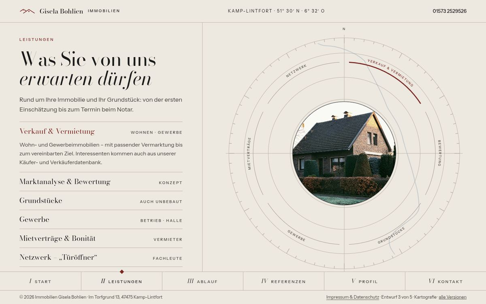
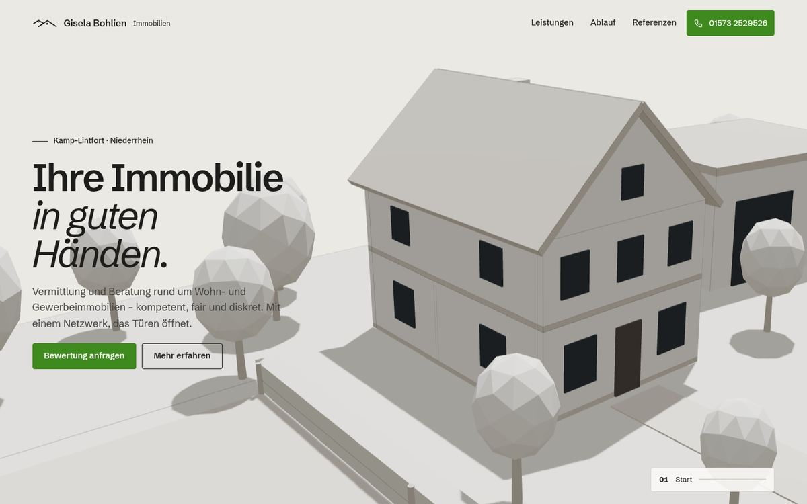
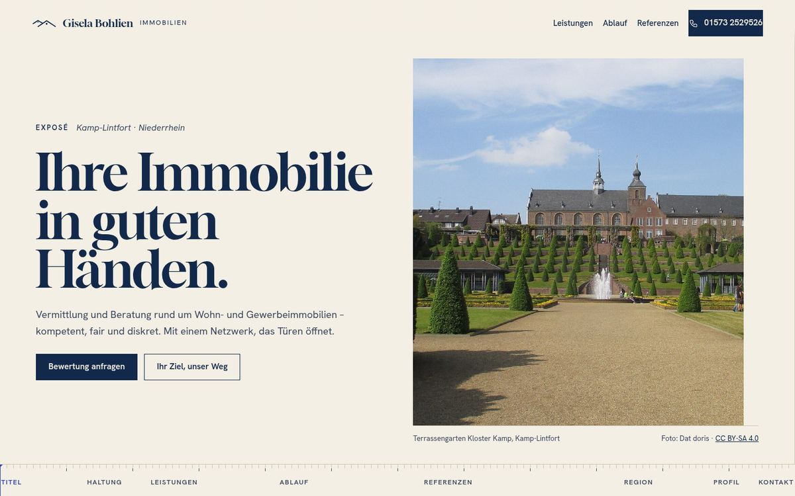
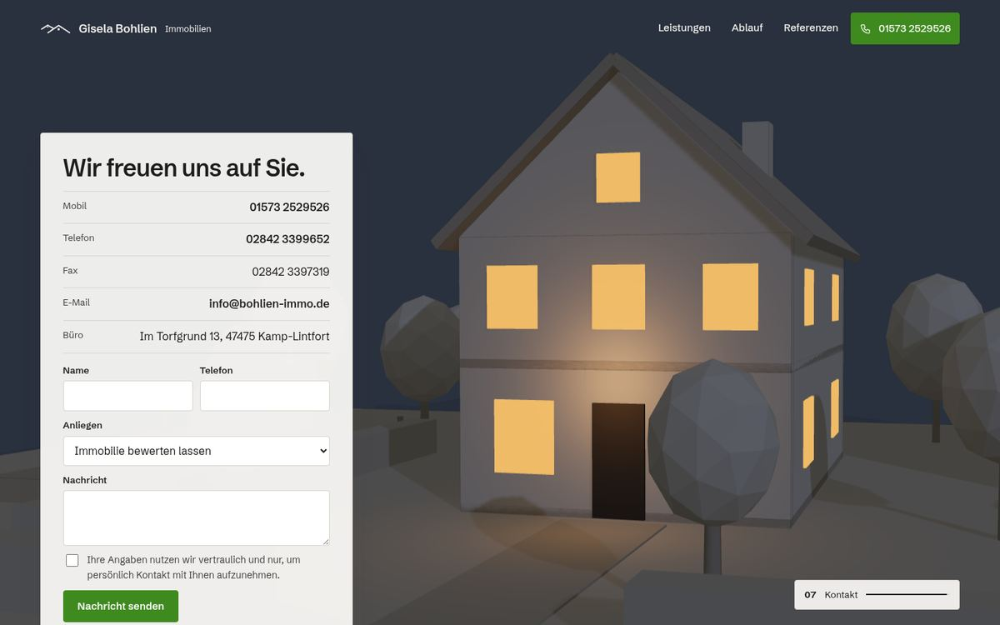

Immobilien Gisela Bohlien – fünf Versionen
Jede Version hat einen eigenen Aufbau, eine eigene Schrift und einen Haupteffekt. Inhalte, Kontakt und Impressum sind überall gleich (Stand der alten Seite).

1Atelier
Geteilter Bildschirm: links eine Bildbühne, rechts die Kapitel. Beim Lesen löst sich das Bild weich ins nächste auf.
- Aufbau
- Split-Screen, Kapitel-Index auf der Bühne
- Stil
- Waldgrün, Creme, Altrosa · Source Serif
- Effekt
- three.js-Shader-Übergang, Referenz als gerahmtes Foto

2Übersicht
Alles auf einen Blick: jede Kachel beantwortet eine Frage – Wert, Ablauf, Gebiet, Referenzen, Ansprechpartnerin.
- Aufbau
- Bento-Raster, erste Ansicht = ganze Seite im Kleinen
- Stil
- Warmweiß, Stein, Logo-Grün · Albert Sans
- Effekt
- leise: Kacheln setzen sich zusammen, sanfte Bild-Parallaxe

3Kartografie
Eine Tafel ohne langes Scrollen: Reiter wechseln die Ansicht, die Kompass-Tafel zeigt Leistungen, Ablauf, Gebiet und Werte.
- Aufbau
- eine Bildschirmseite mit Reitern
- Stil
- Steintöne, Haarlinien, Bordeaux · Bodoni Moda
- Effekt
- Ringe zeichnen sich, Nadel dreht, Linse blendet über

4Modell
Ein weißes Architekturmodell füllt den Bildschirm. Beim Scrollen fährt die Kamera, das Dach hebt sich im Ablauf ab, es wird Abend.
- Aufbau
- 3D-Bühne, Text als Leiste aus Glas-Karten mit Fotos
- Stil
- Weißes Modell, Akzent Grün + Fensterlicht · Cormorant Garamond + Jost
- Effekt
- three.js-Szene, Tag → Nacht, Explosionsansicht

5Exposé
Die Seite läuft wie ein Exposé seitwärts. Leistungen als Lamellen „Ihr Ziel → unser Weg“, ein Maßband zeigt die Position.
- Aufbau
- horizontale Bahn, Details klappen auf
- Stil
- Papier, Marineblau, Kobalt · Gloock
- Effekt
- Bahn 1:1 zum Scrollen, Masken, Zeitlinie zeichnet sich

4Modell am Abend
Dieselbe Szene am Seitenende: Kontakt bei Nacht, die Fenster leuchten warm.
Zum Kontakt springenAlle Versionen: ohne JavaScript lesbar, Bewegung aus bei „Bewegung reduzieren“, für Mobilgeräte ausgelegt. Formular öffnet eine vorausgefüllte E-Mail. Vor Veröffentlichung offen: Datenschutzerklärung, Schriften lokal einbinden, Freigabe der Inhaberin.